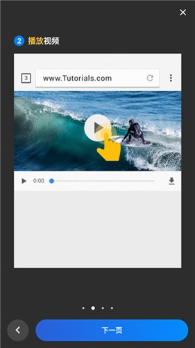

VideoDownloader 快问快答：手机上抓网页视频到底靠不靠谱
整理一篇关于 VideoDownloader 的快问快答——从它是什么、怎么装、能下什么到常见坑，9 组问答把这款安卓视频下载器讲明白。
整理一篇关于 VideoDownloader 的快问快答。这是一款安卓端的视频下载工具，内置浏览器访问网页时能自动检测页面上的视频资源，一键保存到本地。下面九个问题，覆盖从入门到进阶你大概率会想问的。
VideoDownloader 到底是什么，谁需要它？
一句话：它是一个带内置浏览器的视频下载器。你用它打开网页，页面上只要有视频，它就会在视频区域附近弹出下载按钮，点一下选好画质就存手机里。
需要它的人场景很具体：经常在手机上刷各类视频平台（YouTube、TikTok、Facebook、Instagram 这些），遇到想留着离线看的内容，或者想存一些教程、直播回放、新闻片段，又不想在各个 App 里反复找"下载"按钮。也有人用它来替代一些网站自带的下载功能——很多网站移动端根本不给下载入口，或者下载出来带水印。
怎么安装，哪里拿安装包？
常规安卓安装。应用商店能搜到就直接装；如果商店里没有或者版本太旧，去VideoDownloader官网拿 APK 文件，或者直接走官方下载入口手动装就行。手动安装需要在系统设置里允许"未知来源"或"安装未知应用"，不同安卓版本位置略有差异。
安装完首次启动会弹权限请求，别急着一路点拒绝——存储读写权限不给的话，App 能打开也能浏览，但下载任务会一直报错找不到地方存文件。至少要给存储权限，网络权限一般自动授予。
下载流程是什么样的？
打开 App 先访问你想下视频的网页——首页通常就是一个浏览器地址栏。页面加载出来之后，视频区域的右上角或页面边缘会出现一个小下载图标，点它弹出选项面板。
面板里能选画质（360p / 720p / 1080p，有多档才会显示）、选格式（有些视频能直接下 mp3 音频）、改文件名。都选好点确认，下载就进队列了。进度可以从三个地方看：顶部下拉通知栏、App 内部的下载管理器标签、Android 系统通知栏——下载过程中会有一条持续更新的通知，显示速度、剩余时间。

能一次下多个视频吗？
能。同一页面上如果有多个视频，每个检测到的区域都会各自出现下载按钮，分别点它们，全部进入下载队列并发下载。同时下几个取决于 App 的并发数设置和手机性能，一般两三路没问题。
如果一个网站有 DRM 保护的加密流，PlayReady、Widevine、FairPlay 这些，App 能检测到 URL 但解密不了，下到一半可能报错或者拿到一个打不开的文件——这不是 App 的 bug，是源站从协议层就不让抓。
支持哪些视频格式？
官方声称 all download formats are supported，实际常见的容器格式都覆盖了：MP4、M4V、MOV、AVI、WMV 是视频，MP3、M4A 是音频，PDF、DOC、XLS、TXT 这些文档也能下。MP4 是最常见的——绝大多数视频网站的底层格式就是 MP4 的变体。
流媒体协议层面，HLS（.m3u8）和 DASH 这两种自适应码率格式是隐式支持的——App 下载时可能先抓到 m3u8 索引文件，逐个下载 ts 片段再合并成 MP4，整个过程对用户透明。WebM 也能处理。要注意 RealMedia（.rmvb）和 Flash（.flv / .f4v）这两种过时格式基本绝迹了，如果真遇到说明源网站太老，可能不在 App 的检测范围内。
编码格式 H.264、H.265、AV1 这些不受影响——下载器不做转码，原封不动保存，编码由源视频决定。
有什么坑要提前知道？
几个常见的：
第一，Android 11+ 的分区存储机制变了。如果下到 SD 卡，需要在设置里手动选择具体目录，App 才会持有那个目录的永久访问权限。跨目录操作可能被系统限制，设置里如果有"允许所有文件访问"开关，建议打开——关于分区存储的更细配置可以去VideoDownloader文档翻一下。
第二，权限不给的补救路径是：系统设置 → 应用 → VideoDownloader → 权限，找到需要的权限打开，回到 App 重试就行。别直接卸载重装来补权限，没必要。
第三，缓存会偷偷吃空间。内置浏览器的 Cookie、图片缓存，下载中断残留的 .part / .tmp 临时文件，时间久了能占好几百兆。App 内清理工具不太完善，去系统设置 → 应用 → VideoDownloader → 存储，先清缓存——别直接清数据，清数据等于恢复出厂设置，书签和安全文件夹密码全丢。

要不要付费，有广告吗？
现有文档里没提到付费或订阅相关的内容，App 在应用商店的基础下载是免费的。网络访问权限里提到的"加载广告"说明免费版有广告，这是常见的变现方式，不过没看到强制看广告或者广告弹窗拦截下载流程的描述。
如果你特别在意广告，可以找找有没有去广告的版本，但那已经不是官网分发渠道了，自己权衡安全风险。
和同类下载器比怎么样？
视频下载器这个赛道安卓上选择不少，但 VideoDownloader 的定位比较清晰：专注浏览器内检测和一键下载，不做额外花里胡哨的功能。它的优势在于检测准确率——能识别 HLS 和 DASH 两种主流流媒体协议，遇到多档画质的视频能全部列出来让你选。缺点是内置浏览器本身比较轻量，复杂网页的兼容性不如专门的浏览器。
如果你的需求就是"刷网页遇到视频就存下来"，它够用了；如果需要更复杂的浏览器功能或者批量管理下载任务，可能要找更重的工具。
值不值得长期装？
一句话：只要你手机上有定期"想存下来"的视频内容，它就是一个会被反复打开的实用小工具。安装体积不大，不怎么耗电，需要的时候能省不少事——前提是你能接受免费版的广告，以及提前了解那几个 Android 版本差异带来的权限和存储坑。不想折腾的话，装好给足权限、把默认下载位置设好，基本就是打开用、关了走的状态。
这套资料在三个仓库都能拿到——GitHub上维护着完整的文档目录，国内网络访问有困难的可以去Gitee镜像，GitCode那边也同步了一份备份，哪个方便用哪个。